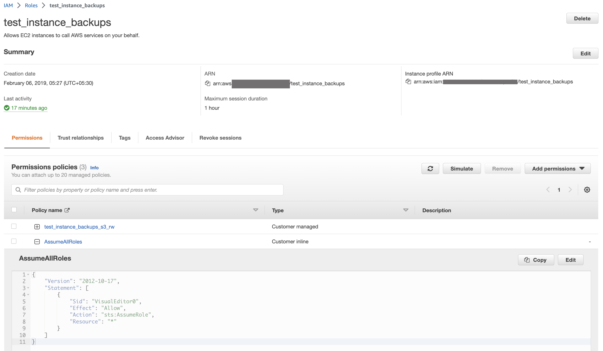
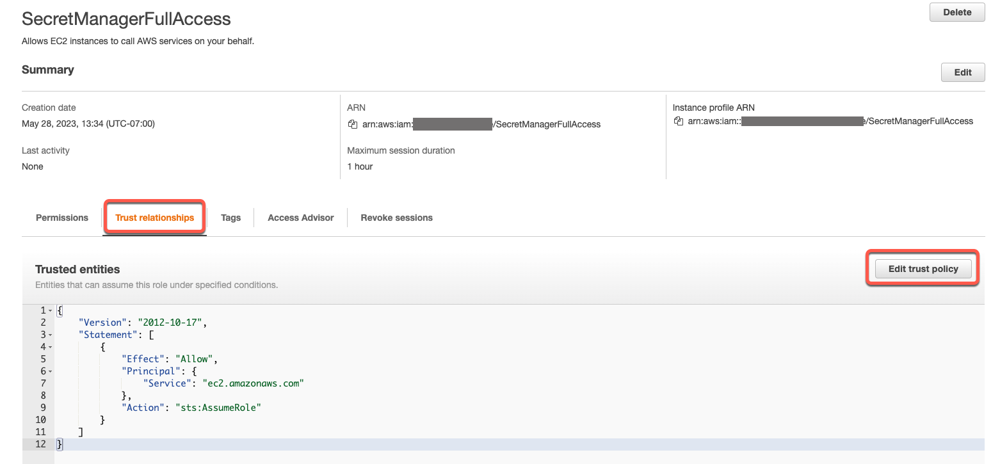
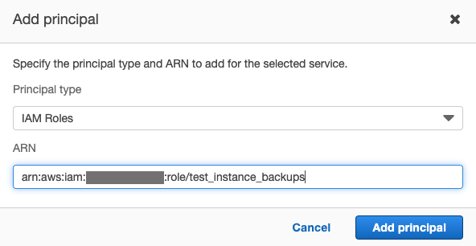
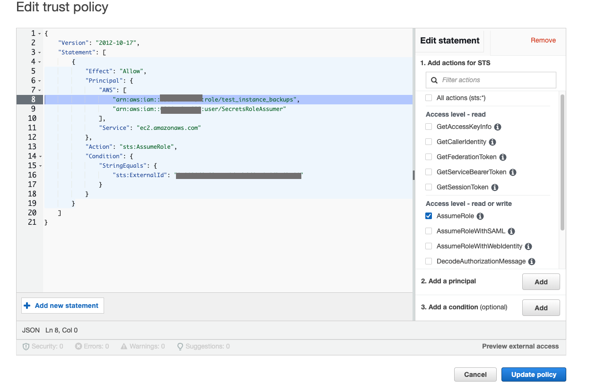
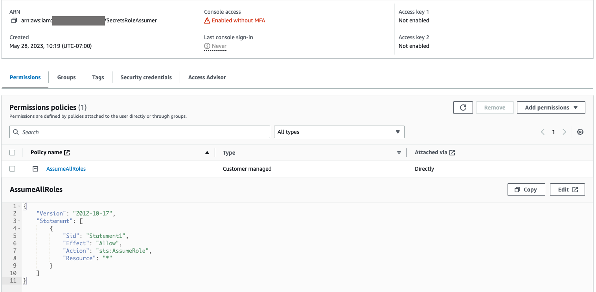
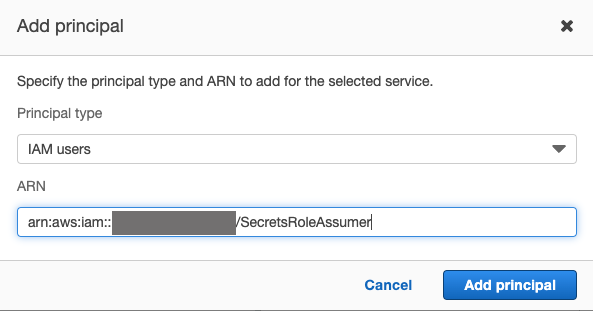
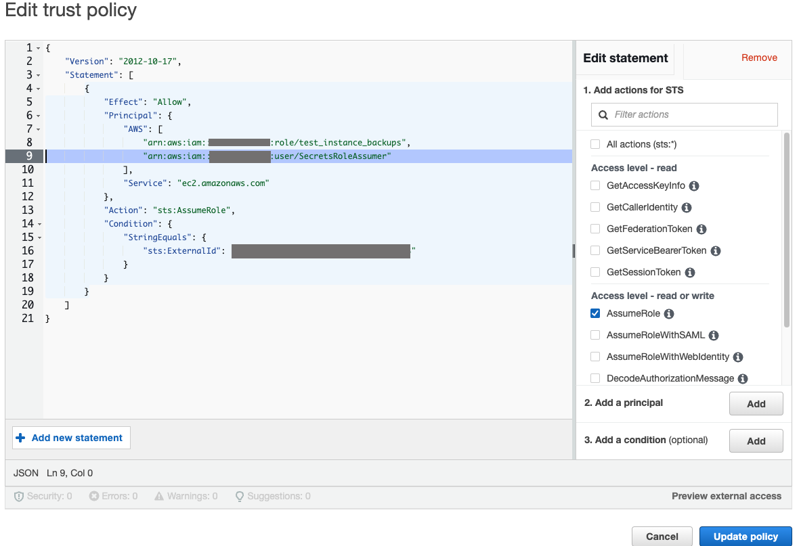

Integration with AWS Secrets Manager for Data Source Authentication Using OCF Connector¶
Alation Cloud Service Applies to Alation Cloud Service instances of Alation
Customer Managed Applies to customer-managed instances of Alation
Applies from version 2023.1.5
Overview¶
Alation can be configured to retrieve secrets from AWS Secrets Manager. Using AWS Secrets Manager allows you to consolidate your credentials in a single, secure location, preventing “credential sprawl” and allowing your organization to comply with IT security policies. You can store secrets such as database passwords and usernames, Kerberos authentication certificates, JDBC URI keys, and more. Alation will read credentials from Secrets Manager when a Data Source Admin launches metadata extraction (MDE), query log ingestion (QLI), and profiling.
Three cases are supported, using different configurations of AWS Identity and Access Management (IAM):
IAM user: IAM user credentials established as an Access Key and Secret Key.
IAM role, option 1: AssumeRole on behalf of a Role attached to the Amazon EC2 instance or container.
IAM role, option 2: AssumeRole on behalf of an IAM user (via the user’s Access Key and Secret Key).
In both of the IAM role cases, the role to be assumed is one that can read secrets from the AWS Secrets Manager.
In each case, integration with Alation involves the following three step process:
Create the appropriate credentials in AWS.
Create an Authentication Configuration Method of method AWS Secrets Manager on the Auth tab of the Admin Settings page of the Alation catalog.
Configure your OCF Connector General Settings to use the credentials specified in the Authentication Configuration you created.
Configure an IAM User¶
To configure an IAM user, perform the following steps from the IAM Dashboard:
In the left pane, select Users under Access Management.
Select the user for whom you want to create access keys. The user must have
secretsmanager:GetSecretValuepermission, such as in this ReadSecrets policy:{ "Version": "2012-10-17", "Statement": [ { "Sid": "VisualEditor0", "Effect": "Allow", "Action": "secretsmanager:GetSecretValue", "Resource": "*" } ] }
From the Security credentials tab, click Create access key.
Create the Access Key ID, the Secret Key, and then store the secret key for future reference. See Managing access keys for IAM users - AWS Identity and Access Management for more details.
To complete the configuration, perform the following steps within Alation:
Log into Alation as a Server Admin.
Click the
 icon and click Authentication.
icon and click Authentication.Under Authentication Configuration Methods for External Systems, click Add Configuration and then select AWS Secrets Manager. The Authentication Configuration Method dialog appears:

In Config Name, enter a unique name for the configuration.
Under Region, select the appropriate AWS region for your IAM User.
Under Authentication Type, select iam_user.
Under AWS Access Key, enter the AWS Access Key you created.
Under AWS Secret Key, enter the AWS Secret Key associated with your AWS Access Key.
Click Save. Alation attempts to create a connection, and if the connection is successful, the configuration is saved.
To use your configuration with an OCF connector, see Configure Authentication with AWS Secrets Manager in Data Source Settings.
Configure AssumeRole for Attached Role¶
To configure the AssumeRole action for a role attached to an Amazon EC2 instance, perform the following steps in the IAM Main Console:
If you are not running an Alation Cloud Service instance on the cloud-native architecture, ensure that the role attached to the Amazon EC2 instance has permission to assume the desired role. It should have a permission policy that includes lines such as the following:
{ "Version": "2012-10-17", "Statement": [ { "Sid": "VisualEditor0", "Effect": "Allow", "Action": "sts:AssumeRole", "Resource": "*" } ] }
Here the Resource field must be populated with the Amazon Resource Number (ARN) of the desired role or a wildcard such as “*” which provides the ability to assume any role.
For example, the following screenshot shows a role test_instance_backups that will be attached to the Amazon EC2 instance. This role includes the permission policy AssumeAllRoles with the code shown above that allows it to perform AssumeRole on any role.
Define a trust relationship on the IAM Role that you want the test_instance_backups to assume. This involves adding a principal and adding a condition, as follows:
In the IAM Console, open the IAM Role that needs to be assumed, for example, SecretManagerFullAccess, as in the following screenshot:
Click Trust Relationships and then click Edit trust policy.
Click the Add button beside Add a principal.
Click the Principal type dropdown and select IAM Roles.
Enter the ARN of the desired IAM Role in the ARN field, and then click Add principal:
Click the Add button beside Add a condition.
In the dialog that appears, click the dropdown button under Condition key and type
externalidin the search box that appears.Select the result sts::ExternalId.
Click the dropdown button under Operator and select StringEquals from the choices offered.
Under Value, enter a unique ID. AWS suggests using one external ID per AWS account, with a randomly generated external ID.
Click Add condition. Your screen should look something like the following:
Click Update policy. You will see a confirmation that the trust policy has been successfully updated.
Note the Maximum session length. You will need this in the steps that follow.
To complete the configuration, perform the following steps within Alation:
Log into Alation as a Server Admin.
Click the
icon and click Authentication.Under Authentication Configuration Methods for External Systems, click Add Configuration and then select AWS Secrets Manager. The Authentication Configuration Method dialog appears:
In Config Name, enter a unique name for the configuration.
Under Region, select the appropriate AWS region for your IAM Role.
Under Authentication Type, select iam_role.
Under Role ARN, enter the ARN for the role you configured as principal.
Under External ID, enter the External ID you specified as a condition.
Under STS Duration, enter a value in seconds greater than 900 and less than the maximum session duration specified for your role. The maximum duration is 12 hours; you may not enter a value greater than 43200, which is the number of seconds in that maximum duration.
Click Save. Alation attempts to create a connection, and if the connection is successful, the configuration is saved.
To use your configuration with an OCF connector, see Configure Authentication with AWS Secrets Manager in Data Source Settings.
Configure AssumeRole on Behalf of a User¶
Ensure that the IAM user has permission to assume the desired role. It should have a permission policy that includes lines such as the following:
{ "Version": "2012-10-17", "Statement": [ { "Sid": "VisualEditor0", "Effect": "Allow", "Action": "sts:AssumeRole", "Resource": "*" } ] }
Here the Resource field must be populated with the Amazon Resource Number (ARN) of the desired role or a wildcard such as “*” which provides the ability to assume any role.
For example, the following screenshot shows a user with the permission policy AssumeAllRoles with the code shown above that allows it to perform AssumeRole on any role.
Define a trust relationship on the IAM Role that you want the user to assume. This involves adding a principal and adding a condition, as follows:
In the IAM Console, open the IAM Role that needs to be assumed, for example, SecretManagerFullAccess, as in the following screenshot:
Click Trust Relationships and then click Edit trust policy.
Click the Add button beside Add a principal.
Click the Principal type dropdown and select IAM users.
Enter the ARN of the desired IAM user in the ARN field, and then click Add principal:
Click the Add button beside Add a condition.
In the dialog that appears, click the dropdown button under Condition key and type
externalidin the search box that appears.Select the result sts::ExternalId.
Click the dropdown button under Operator and select StringEquals from the choices offered.
Under Value, enter a unique ID. AWS suggests using one external ID per AWS account, with a randomly generated external ID.
Click Add condition. Your screen should look something like the following:
Click Update policy. You will see a confirmation that the trust policy has been successfully updated.
Note the Maximum session duration. You will need this in the steps that follow.
To complete the configuration, perform the following steps within Alation:
Log into Alation as a Server Admin.
Click the
icon and click Authentication.Under Authentication Configuration Methods for External Systems, click Add Configuration and then select AWS Secrets Manager. The Authentication Configuration Method dialog appears:
In Config Name, enter a unique name for the configuration.
Under Region, select the appropriate AWS region for your IAM Role.
Under Authentication Type, select iam_role.
Under Role ARN, enter the ARN for the role you configured as principal.
Under External ID, enter the External ID you specified as a condition.
Under STS Duration, enter a value in seconds greater than 900 and less than the maximum session duration specified for your role. The maximum duration is 12 hours; you may not enter a value greater than 43200, which is the number of seconds in that maximum duration.
Click Save. Alation attempts to create a connection, and if the connection is successful, the configuration is saved.
To use your configuration with an OCF connector, see Configure Authentication with AWS Secrets Manager in Data Source Settings.
Adding Secrets to AWS Secrets Manager¶
You can store secrets in AWS Secrets Manager in several ways, either as plain text or Key/Value pairs in JSON format. You can also store certificates in binary form, but this cannot be done through the AWS Secrets Manager web interface, only using the AWS command-line interface.
For complete details, see Create an AWS Secrets Manager secret.
Configure Authentication with AWS Secrets Manager in Data Source Settings¶
Use the steps in this section to configure your data source to read the service account credentials from AWS Secrets Manager:
Log in to Alation and go to the settings page of the OCF data source for which you’re setting up authentication with AWS Secrets Manager.
Open the General Settings tab of the settings page and click the vault icon for each setting you want to configure using AWS Secrets Manager.
Click Select a Configuration and select the appropriate AWS Secrets Manager configuration.
Enter the Amazon Resource Name (ARN) of the secret that stores the desired setting. If the setting is stored as JSON Key/Value pairs, add a colon and the appropriate key. For example, the following ARN contains both username and password. The username can be extracted as
arn:aws:secretsmanager:us-east-1:123456789012:secret:uat-secrets-xxxxxx:username
Repeat as needed for additional settings.
Click Save. These identifiers will be used to look up the actual username and password stored in the AWS Secrets Manager.
Now, when a Data Source Admin performs MDE, QLI, Sampling, and Profiling, Alation will read the appropriate credentials from AWS Secrets Manager.